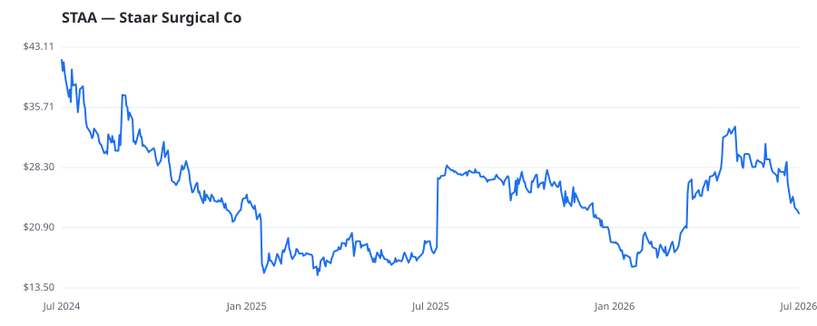

bullish · bearish · n/a — dots: price>SMA10 · SMA10>SMA50 · SMA50>SMA200 · up>down volume (20d)
Health Care Equipment & Services · small cap

Staar Surgical Co is a manufacturer of lenses. It designs, develops, manufactures, and sells implantable lenses for the eye and delivery systems used to deliver the lenses into the eye. The company offers two types of products: Implantable Collamer lenses (ICL), which are used in refractive surgery. The company generates almost all of its revenue from the sale of its ICL products. Geographically, the company generates key revenue from Foreign sales. OPHTHALMIC GOODS · website
| Revenue | $239.4M | Net income | $-80.4M |
|---|---|---|---|
| Operating income | $-91.7M | Diluted EPS | $-1.62 |
| Assets | $451.7M | Equity | $344.2M |
🛒 Newly buying: Anatole Investment Management Ltd (+63%, 4.2% of book) · AI-Squared Management Ltd (+54%, 3.6% of book) · CRCM LP (+67%, 1.3% of book)
| Fund | Fund alpha vs SPY | Position | % of book |
|---|---|---|---|
| BROADWOOD CAPITAL INC | +5% | $302M | 21.3% |
| Anatole Investment Management Ltd | +63% | $30M | 4.2% |
| AI-Squared Management Ltd | +54% | $5M | 3.6% |
| CRCM LP | +67% | $2M | 1.3% |
| Greenfield Seitz Capital Management, LLC | +7% | $1M | 0.4% |
Hedge data: SEC EDGAR 13F · ranked funds beat SPY in >50% of their quarters · fund alpha = mirror-portfolio return minus SPY.